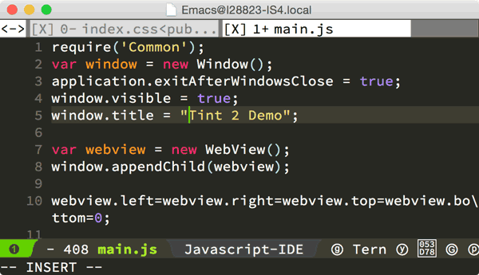
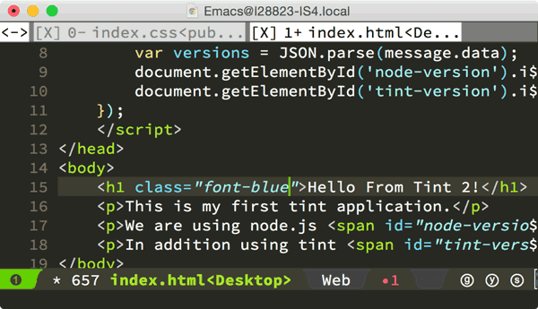
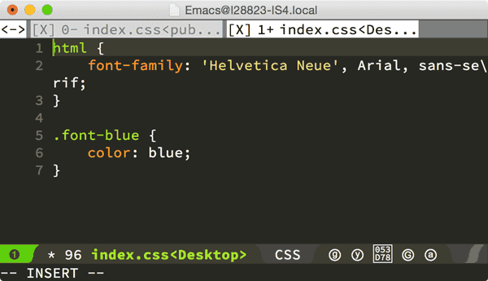

Compiles To
Tint compiles beautiful and unique applications for MacOS X and Windows using HTML5, CSS3, JavaScript and an advanced JS-based API.

Javascript is uniquely capable (including libuv and node) at handling event-based programming. Both server applications and desktop applications share a common problem; responding to events and blocking an event loop. This is typically the cause of slow server performance; or the "white-out" application on Windows or spinning beach-ball of doom on OSX. Tint uses event-based programming to overcome this and makes development of desktop applicaitons much easier and clearer by using an entirely event-based model and non-blocking API for user interfaces.
Design your applications and develop them with existing tools you're already familiar with. Tint supports powerful display capabilities such as WebGL, CSS3, HTML5 or any JavaScript animation library. In addition access native widgets, toolbars, menus through JS.
Tint's Javascript based API allows you to access functions and objects to integrate native functionality such as system settings, toolbars, trays, notifications and transparent, glass, framed, kiosk, fullscreen and regular window styles.
Tint's Compiler takes your HTML, CSS and Javascript resources and compiles a MacOSX and Windows native application with no third-party dependencies or runtimes to install. Distribute your apps how you want.
Use built in debugging javascript tools to set break points, trace stacks, change HTML and JavaScript or inspect elements live.
There's a long long list somewhere. Suffice it to say, about the only thing they share is their aim.
Tint used node-webkit and was more or less chrome + node. Tint 2 is node with a custom bridge and API for accessing native objects. At the end of the day Tint 2 is more performant, security compliant, app store compliant, has more features, and streamlines development immensely.
It depends on the type of application you're developing. It's your choosing.
The MIT license we use allows you to run it or modify it how you chose, and you do not need to disclose any of your source code. The basic version just includes command line utilities which you can use at your own pleasure (and however you wish with no restrictions), the commercial version is essentially the basic one but with a ton of built in goodies to ease development workflows, debug, etc. It also includes a support contract with us.
There is an introduction to Tint in the Getting Started section of the documents and many examples through out the documentation of how to use the API.
If you have an app you've built and would like to show it off, let us know. We'd love to showcase it!
Find our source code, file issues, track changes and find out more from our GitHub account.
Browse through Tint's Javascript API, find overviews, examples and a 30-second getting started guide.